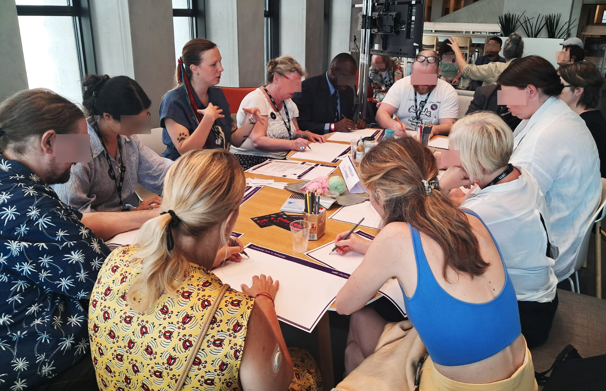
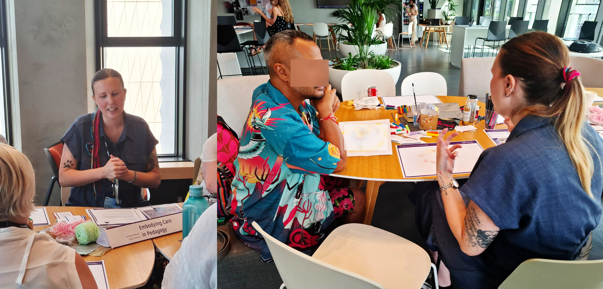
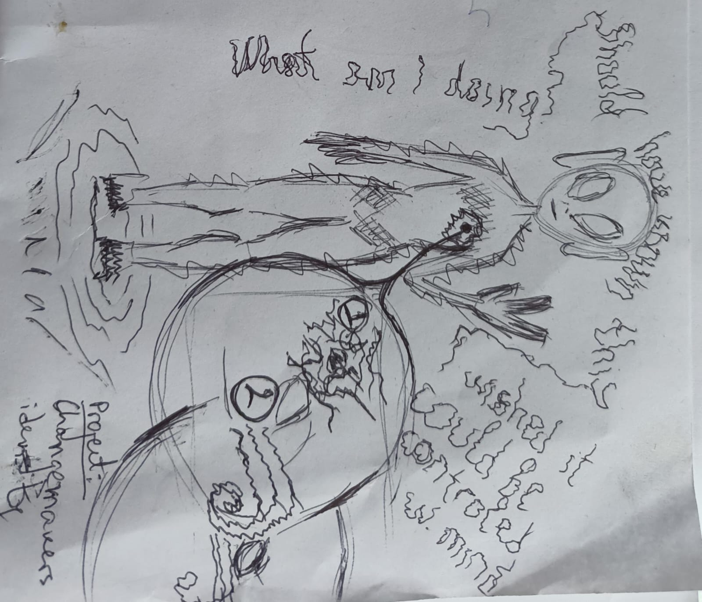
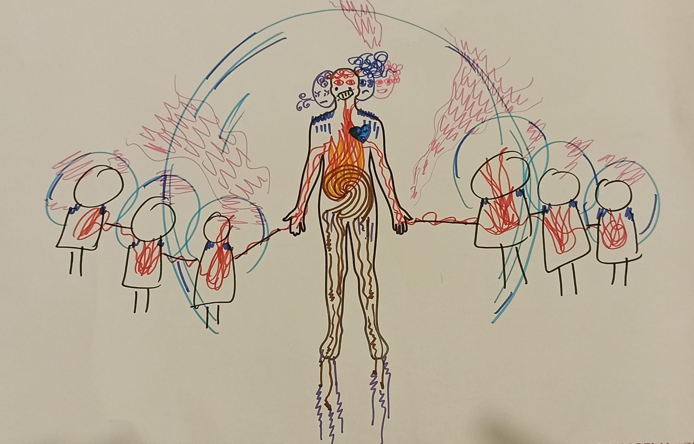
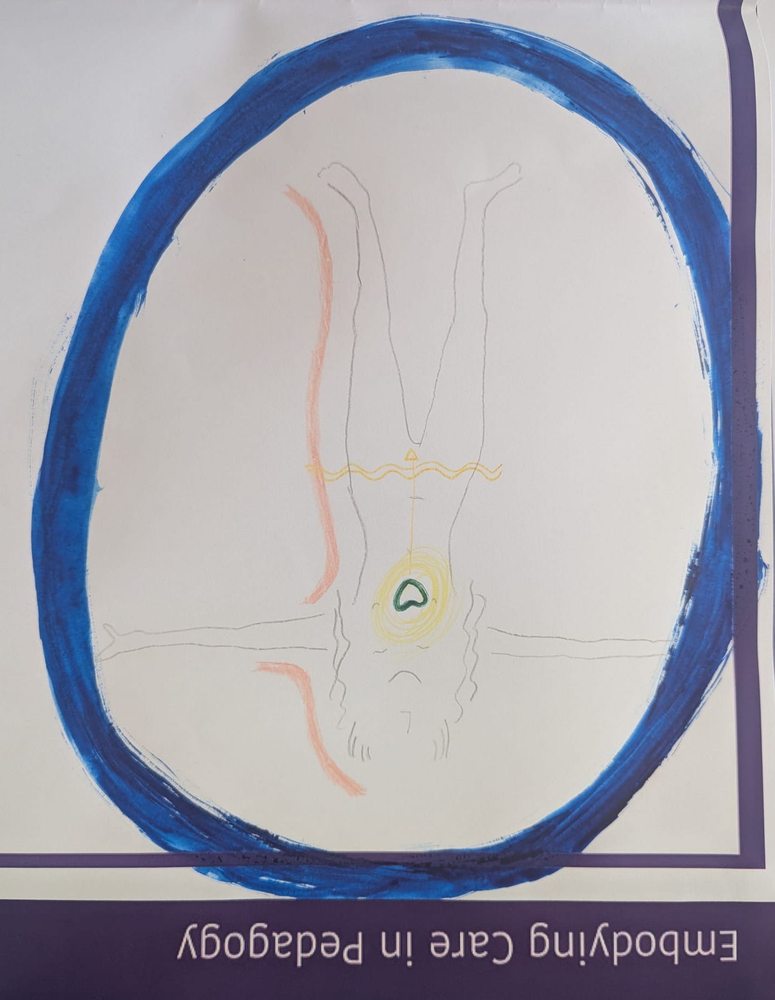
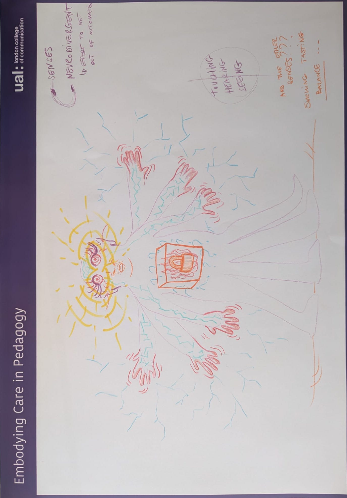
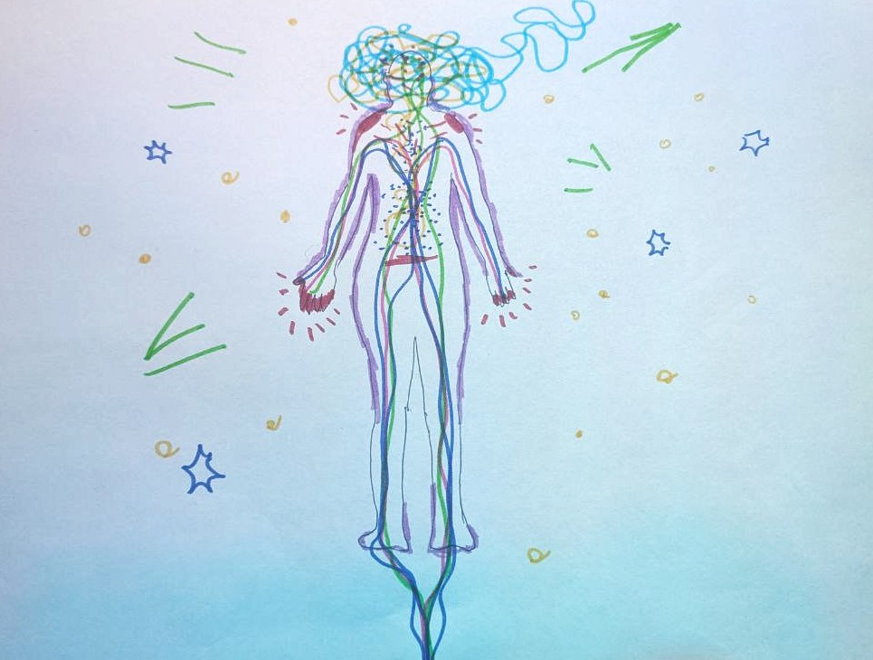
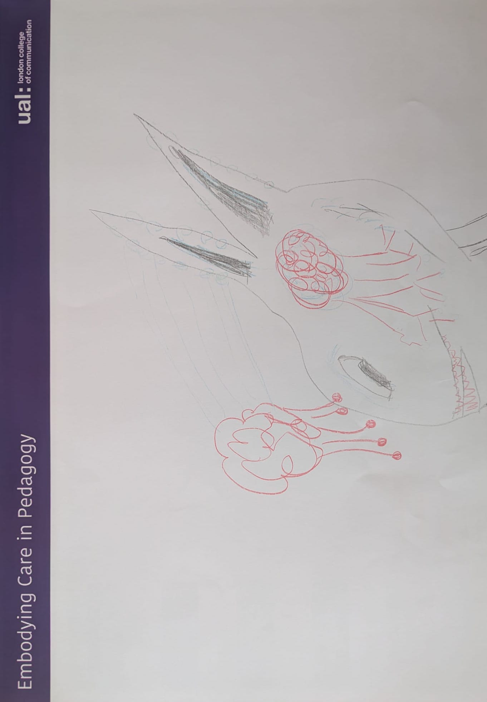

Chiara facilitating the Embodying Care in Pedagogy workshop at London College of Fashion (LCF) - UAL.
Co-designed by Chiara Portinari and Saranya Satheesh, Embodying Care in Pedagogy invited educators to explore teaching as an embodied, emotional, and identity-informed practice. The workshop used body mapping as a creative method for reflecting on how care, knowledge, and power are carried within the body and expressed in the classroom.

Chiara facilitating and engaging with one participant of the Embodying Care in Pedagogy workshop.
Grounded in anti-colonial and feminist pedagogies, the session encouraged participants to consider where care lives in their bodies, where they hold the knowledge they teach—and the knowledge they have been discouraged from sharing—and what it might feel like to teach from a place of healing, both for themselves and their students.
Some examples of body mapping:



Through drawing, writing, and collective reflection, the workshop created space for deep personal insight and shared dialogue. It supported educators in imagining more inclusive, compassionate, and justice-oriented approaches to teaching and learning.



This session forms part of Chiara’s ongoing commitment to relational pedagogy, and to rethinking educational spaces as sites of transformation and care.
“Thank you for such an imaginative, gently facilitated and deeply thought provoking session. A beautiful pause holding space through drawing.”